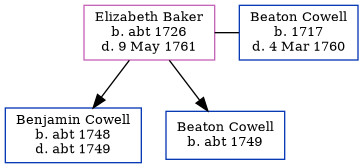

Elizabeth Cowell (née Baker) c1726 - 1761
[ Home ] | [ Calendar ] | [ Surnames Index ] | [ Family History ]Elizabeth Baker, the wife of Beaton Cowell (the six times great-uncle of Nigel Horne), was born in Margate, Kent, England <i>c.</i> 1726 and married Beaton (with whom she had 2 children: <a href="I1352.html">Benjamin</a> and <a href="I1413.html">Beaton</a>) at Christ Church Cathedral, Canterbury, Kent, England on Feb 4, 1747<span class="citation">1</span>.<p>She died on May 9, 1761 in Thanet, Kent.
Children
- Benjamin was born c. 1748
- Beaton was born c. 1749
Citations
- Kent, Canterbury Archdeaconry Marriages - Findmypast
Media
Canterbury Marriages - GBPRS/CANT/M/97153612/1
England Marriages 1538-1973 - R_22085684469
Boyd's 1st Misc - GBPRS/M/710175891/1
Kent, East Kent marriage index 1538-1754 Transcription - GBPRS-EASTKENT-MAR-165042-1
Canterbury Marriages - GBPRS/CANT/M/97153612/2
England Marriages 1538-1973 - R_22085684469/2
Britain, marriage licences - GBPRS/COA/MARRLICENCE/00150918/2
Family Tree
Generated by Ged2Site. Last updated on Jul 20, 2025